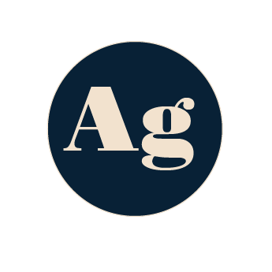

AGATA SZULC
Projects
About me
Contact
Assignment
Fonts and UI cards
Design for developers
During this theme I learned about importance of font hierarchy and website's color choice. Moreover how to communicate using design and how to make a website more user-friendly, appealing and last but not least, how to make it responsive.
Assignments

Fonts and UI cards
Colors and animations
Responsive design